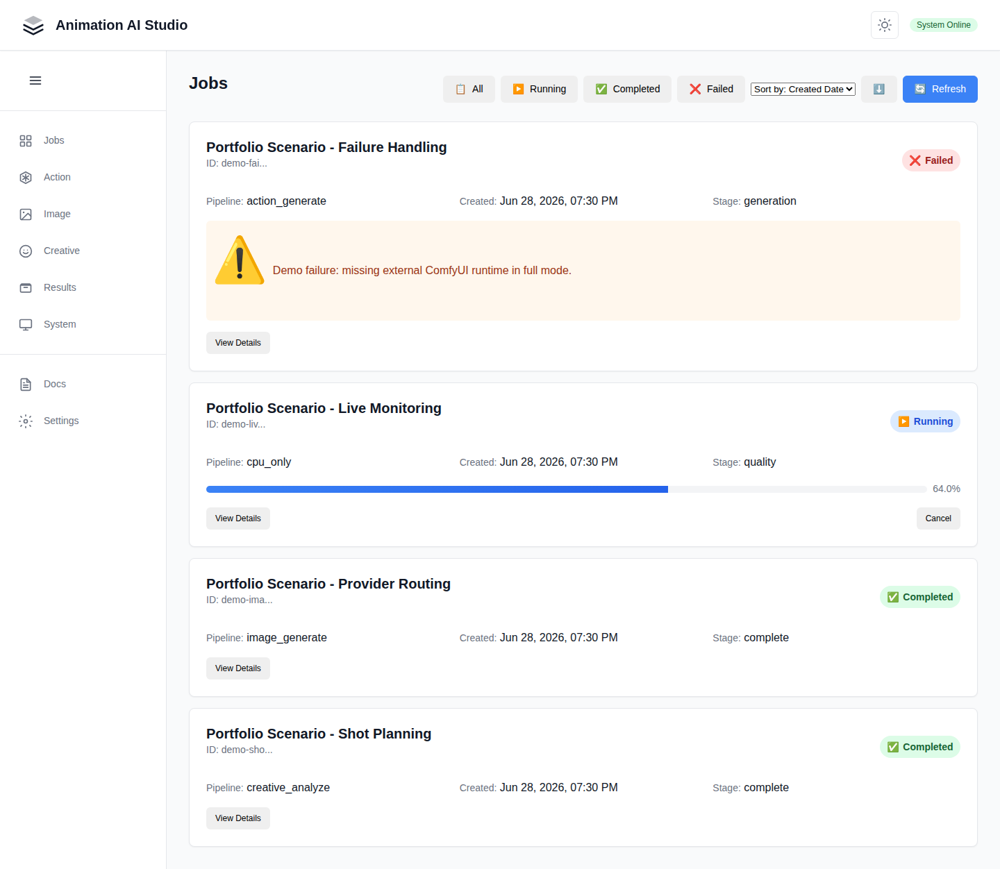
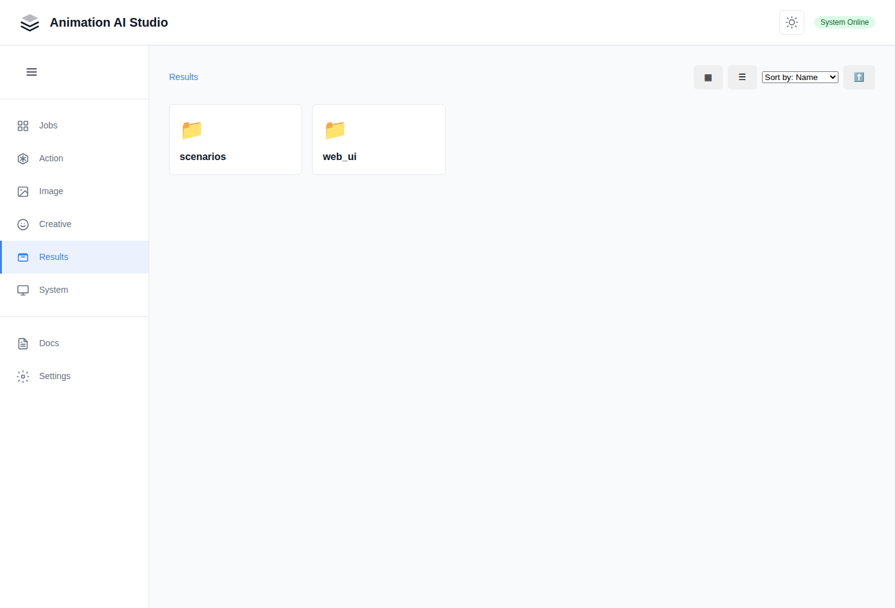
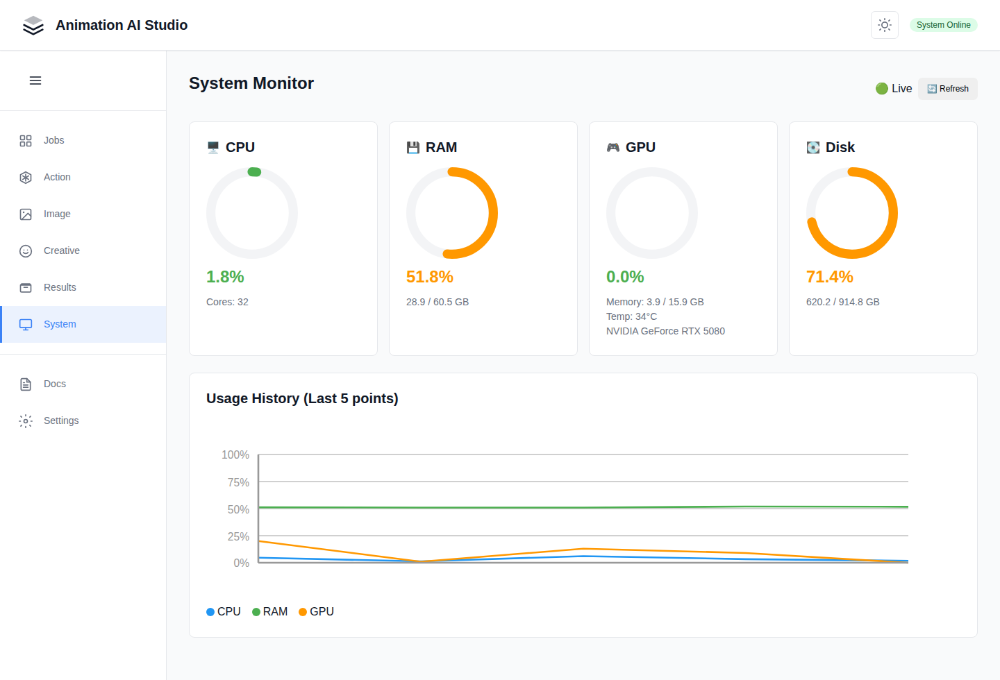
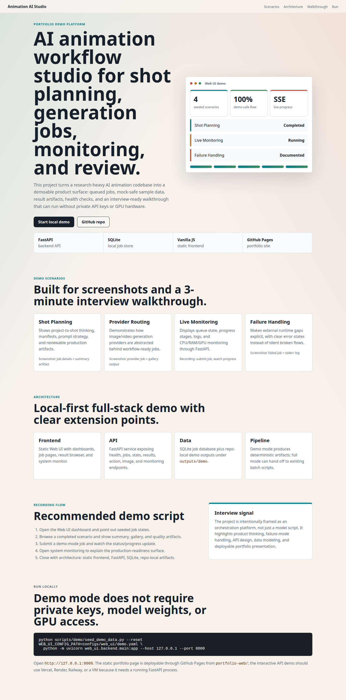

Shot Planning
Shows project-to-shot thinking, manifests, prompt strategy, and reviewable production artifacts.
Screenshot: job details + summary artifactPortfolio Demo Platform
This project turns a research-heavy AI animation codebase into a demoable product surface: queued jobs, mock-safe sample data, result artifacts, health checks, and an interview-ready walkthrough that can run without private API keys or GPU hardware.
Screenshots And Demo Video
These screenshots are captured from the runnable local demo mode. The video is a short reel of the portfolio page, seeded job dashboard, result browser, and system monitor.




Demo Scenarios
Shows project-to-shot thinking, manifests, prompt strategy, and reviewable production artifacts.
Screenshot: job details + summary artifactDemonstrates how image/video generation providers are abstracted behind workflow-ready jobs.
Screenshot: provider job + gallery outputDisplays queue state, progress stages, logs, and CPU/RAM/GPU monitoring through FastAPI.
Recording: submit job, watch progressMakes external runtime gaps explicit, with clear error states instead of silent broken flows.
Screenshot: failed job + stderr logArchitecture
Static Web UI with dashboards, job pages, result browser, and system monitor.
FastAPI service exposing health, jobs, stats, results, action, image, and monitoring endpoints.
SQLite job database plus repo-local demo outputs under outputs/demo.
Demo mode produces deterministic artifacts; full mode can hand off to existing batch scripts.
Recording Flow
The project is intentionally framed as an orchestration platform, not just a model script. It highlights product thinking, failure-mode handling, API design, data modeling, and deployable portfolio presentation.
Run Locally
python scripts/demo/seed_demo_data.py --reset
WEB_UI_CONFIG_PATH=configs/web_ui/demo.yaml \
python -m uvicorn web_ui.backend.main:app --host 127.0.0.1 --port 8000
Open http://127.0.0.1:8000. The static portfolio page is deployable through GitHub Pages from
portfolio-web/; the interactive API demo should use Vercel, Render, Railway, or a VM because it
needs a running FastAPI process.